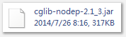

二、 基于接口的动态代理：被代理对象最少实现了一个接口。
用Proxy.newProxyInstance(Classloader loader,Class<?>[] interfaces,InvocationHandler h);
代码如下：代理类来控制
public class BeanFactory {
public static BusinessService getBusinessService(){
final String includeMethods[] = { "transfer"}; //写到配置文件中
final BusinessService s = new BusinessServiceImpl();
//AOP
BusinessService proxyS = (BusinessService)Proxy.newProxyInstance(s .getClass().getClassLoader(),
s.getClass().getInterfaces(),
new InvocationHandler() {
public Object invoke(Object proxy, Method method, Object[] args)
throws Throwable {
try{
boolean needInterceptor = false;
for(String methodName:includeMethods){
if(method.getName().equals(methodName)){
needInterceptor = true;
}
}
if(needInterceptor){
long time = System.currentTimeMillis();
TransactionManager. startTransaction();
Object rtValue = method.invoke(s, args);
TransactionManager. commit();
System. out.println(method.getName()+ "用时："+(System.currentTimeMillis()-time)+ "毫秒");
return rtValue;
} else{
return method.invoke(s, args);
}
} catch(Exception e){
TransactionManager. rollback();
throw new RuntimeException(e);
} finally{
TransactionManager. release();
}
}
});
return proxyS;
}
}
c.1 基于子类的动态代理：代理类是被代理类的子类。需要用到CGLIB，用到包。
代码如下：
public class ArtistMan {
public void sing( float money) {
System. out.println( "收到：" +money +"开始唱歌" );
}
public void dance( float money) {
System. out.println( "收到：" +money +"开始跳舞" );
}
public void eat() {
System. out.println( "开始吃饭" );
}
}
public class Boss2 extends ArtistMan {
public static void main(String[] args) {
final ArtistMan man = new ArtistMan();
ArtistMan proxyMan = (ArtistMan) Enhancer.create(ArtistMan. class, new MethodInterceptor() {
public Object intercept(Object proxy, Method method, Object[] args,
MethodProxy arg3) throws Throwable {
if( "sing".equals(method.getName())){
float money = (Float) args[0];
return method.invoke(man, money/2);
} else if( "dance".equals(method.getName())){
float money = (Float) args[0];
return method.invoke(man, money);
} else{
return method.invoke(man, args);
}
}
});
proxyMan.sing(200);
proxyMan.dance(300);
proxyMan.eat();
}
}